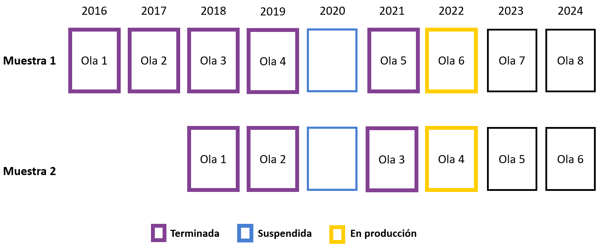
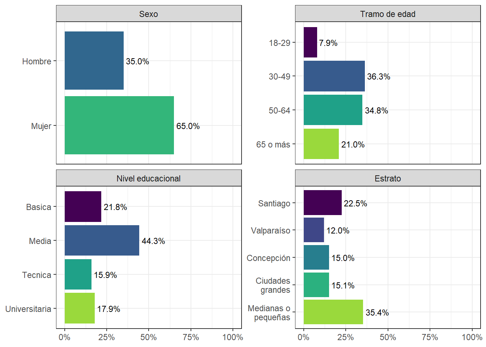
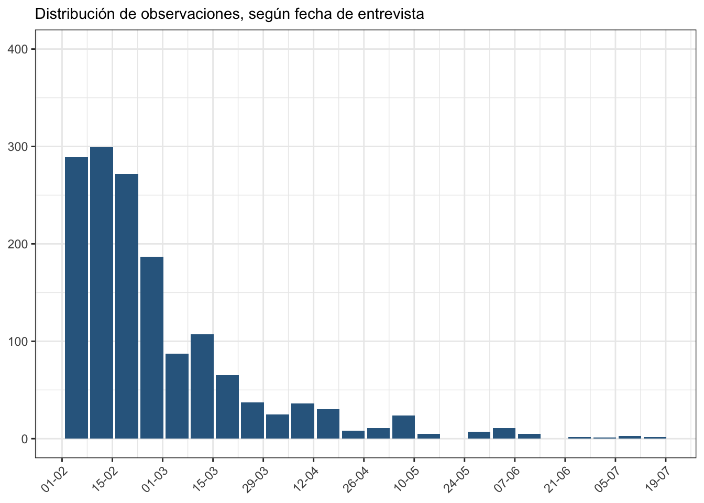
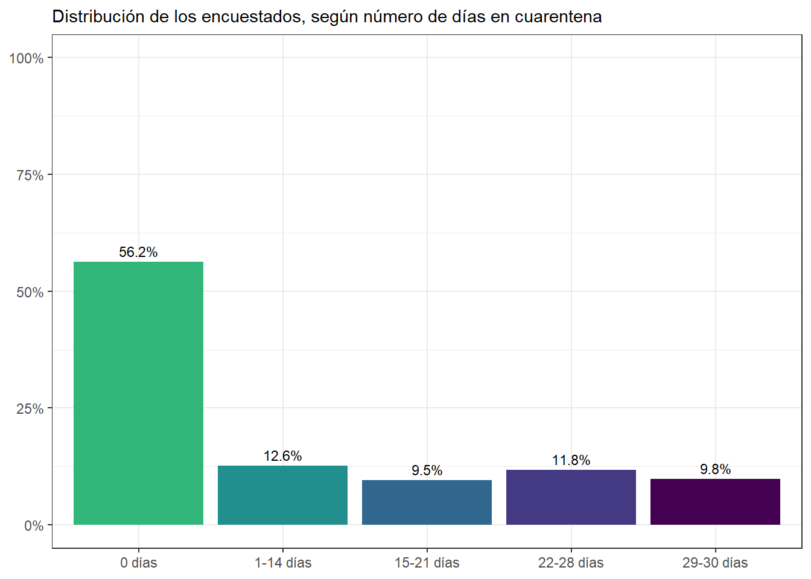

Capítulo 1 Presentación del estudio
1.1 Sobre COES
El Centro de Estudios de Conflicto y Cohesión Social (COES) desarrolla investigación colaborativa en temas relacionados al conflicto social y la cohesión (convivencia) en Chile, por medio de un equipo multidisciplinario proveniente de las ciencias sociales y humanidades. COES centra sus actividades académicas y de difusión en el análisis de las múltiples manifestaciones del conflicto y cohesión social en Chile, sus causas, así como también su contexto cultural e histórico.
COES está patrocinado por la Universidad de Chile y la Pontificia Universidad Católica de Chile, y como instituciones asociadas se encuentran la Universidad Diego Portales y la Universidad Adolfo Ibáñez. COES cuenta con el apoyo del Fondo de Financiamiento de Centros de Investigación en Áreas Prioritarias (FONDAP, dependiente de la Agencia Nacional de Investigación y Desarrollo (ANID) del Ministerio de Ciencia, Tecnología, Conocimiento e Innovación (MinCiencia). ELSOC además cuenta como socio al Instituto Milenio para la Investigación en Depresión y Personalidad (MIDAP).
1.2 Sobre ELSOC
Descripción del estudio
El Estudio Longitudinal Social de Chile (ELSOC) es una encuesta panel, representativa de la población nacional urbana, que analiza la estabilidad y cambio de las creencias, actitudes y percepciones que tenemos los chilenos y chilenas respecto de la convivencia y del conflicto, la cohesión y una amplia gama de aspectos políticos y sociales a lo largo del tiempo.
Este estudio sigue la evolución de cerca de 4.500 chilenos y chilenas a lo largo de una década. Actualmente se encuentran disponibles 5 olas del estudio, abarcando el período entre 2016 y 2021. Sus temas de estudio y su aspecto longitudinal convierten a ELSOC en un recurso único en Chile y América Latina para analizar la evolución de la sociedad chilena y para el desarrollo de las ciencias sociales en Chile.
Durante los últimos años, ELSOC se ha consolidado como un importante insumo para el desarrollo de investigación científica y aplicada en ciencias sociales. En el sitio web de (ELSOC)(https://coes.cl/encuesta-panel/) se puede acceder a más información sobre el estudio.
Acceso a Bases de Datos ELSOC
Las bases de datos y documentación correspondientes se encuentran disponibles, de manera libre y gratuita, en un repositorio de datos, al cual se podrá acceder en el link:
https://dataverse.harvard.edu/dataverse/elsoc
En este sitio se obtendrá acceso a los datos de las 5 mediciones transversales de ELSOC, así como bases longitudinales que integran las distintas mediciones. En colaboración con el Centro de Inteligencia Territorial (CIT), se pone también a disposición las bases ELSOC-CIT. Estas bases de datos permiten combinar la información de ELSOC, y estimaciones e indicadores territoriales y geoespaciales de distinta índole, proveniente de diversas fuentes de información nacional para los períodos 2016 a 2019.
ELSOC tiene un compromiso con los más altos estándares científicos en términos de producción y análisis de datos. Dentro de esta visión global, ELSOC se guía por las principales pautas de Transparencia y Apertura en la investigación científica. Por esta misma razón, los códigos utilizados para el desarrollo de este documento se encontrarán disponibles en https://github.com/edgardo-cerda/reporte-elsoc-2021.
Características del diseño muestral
Unidad de Análisis: Individuos
Muestra objetivo: 3.000 individuos en muestra original (a partir de 2016) y 1.500 en muestra refresco (a partir de 2018)
Población Objetivo: Hombres y mujeres de 18 a 75 años, residentes habituales de viviendas particulares ocupadas en zonas urbanas, localizadas en 40 ciudades (92 comunas, 13 regiones) del país
Periodicidad: Anual.
Diseño Muestral: Probabilístico, estratificado (por tamaño de ciudades), por conglomerados y multietápico
Marco Muestral: Marco de muestreo de manzanas del pre-censo 2011
Unidades de Muestreo: Primero se eligen ciudades (UPM), luego manzanas (USM), y sub-bloques y viviendas (UTM). La unidad final de selección es la persona
Organismo Ejecutor: Consultora Stephanie Eckman y Centro de Inteligencia Territorial (CIT) de la Universidad Adolfo Ibáñez
Figura 1.1: Mediciones de ELSOC
Figura 1.2: Muestreo de ELSOC

Características del levantamiento de datos
Formato de aplicación: Cuestionario estructurado. Levantamiento en formato CAPI (Encuesta presencial con asistencia de tablet). Excepcionalmente se cambió a formato CATI (Encuesta telefónica con asistencia de tablet) durante 2021, debido a contingencia COVID-19
Período de Aplicación: entre Julio y Noviembre de cada año. Debido al estallido social, la cuarta medición se aplicó entre el 21 de noviembre de 2019 y el 9 de marzo de 2020. Debido a la pandemia, la quinta medición se aplicó entre el 29 de enero de 2021 y 12 de julio de 2021
Instrumento: Cuestionario compuesto por preguntas cerradas de carácter simple y múltiple junto a algunas preguntas abiertas. Combina módulos de preguntas permanentes (medidas en todas las olas) y otras intercaladas entre olas
Cobertura Temática: Contiene siete módulos temáticos: Territorio, Redes y actitudes sociales, Ciudadanía y democracia, Desigualdad y legitimidad, Conflicto social, Salud y bienestar y Caracterización sociodemográfica
Incentivos a la participación: Entrega de incentivos monetarios para el encuestado ($ 6.000 CLP) y de material sobre el estudio (ELSOC y COES). Acciones de seguimiento basadas en la información de contacto (correo electrónico para cumpleaños y días festivos)
Entrenamiento de entrevistadores: Contratación de entrevistadores con experiencia en encuestas complejas y/o longitudinales. Capacitación centralizada y presencial para coordinadores de campo y un subconjunto de entrevistadores en Santiago (incluidos ejercicios prácticos para la implementación del cuestionario, uso de tabletas y protocolo de contacto). Actividades adicionales en otras regiones de Chile. Diseño de un Manual de entrevistador especializado para el proyecto
Operaciones de Control y Supervisión: Coordinadores de campo supervisan el trabajo de entrevistadores, verificando el número de visitas, el contacto, la identidad del participante y preguntas claves. Organismo ejecutor realiza una supervisión interna de al menos el 10% de la muestra (entrevistando nuevamente a algunos encuestados), verificando la duración y la respuesta de los participantes
Organismo Ejecutor: Levantamiento a cargo de Centro Micro Datos (CMD) de la Universidad de Chile
1.3 Atrición de la muestra
El diseño de ELSOC contempló entrevistar a 3.000 personas en su muestra original y 1.500 en la muestra refresco. Sin embargo, es habitual que en encuestas panel se reduce el número de participantes, dado que algunos optan voluntariamente por dejar de participar y otras personas no pueden ser recontactadas. Este fenómeno es conocido como atrición, y pueden tener efectos nocivos sobre la utilidad de los datos longitudinales. En el caso de ELSOC, la tasa de atrición es comparativamente baja en comparación a otros estudios similares, por lo que no se considera al momento un problema significativo. A pesar de esto, el año 2018 se introduce una muestra refresco para contrarrestar el efecto de la atrición.
El año 2021, la atrición presenta un alza importante debido a la mayor dificultad que implica el levantamiento durante la pandemia de COVID-19 y al cambio de modalidad.
|
Muestra original
|
Muestra refresco
|
|||
|---|---|---|---|---|
| Medición | Muestra lograda | Atrición | Muestra lograda | Atrición |
| 2016 | 2 927 | |||
| 2017 | 2 473 | 15.5% | ||
| 2018 | 2 229 | 9.9% | 1 519 | |
| 2019 | 2 153 | 3.4% | 1 264 | 16.8% |
| 2021 | 1 739 | 19.2% | 1 001 | 20.8% |
Atrición acumulada según Sexo, Grupo etáreo, Nivel educacional y Estrato
Para el cálculo de atrición acumulada se considera el período 2016-2021 para la muestra original, y el período 2018-2021 para la muestra refresco
- Según sexo:
|
Muestra lograda en 2021
|
Atrición acumulada
|
|||
|---|---|---|---|---|
| Sexo | Muestra original | Muestra refresco | Muestra original | Muestra refresco |
| Hombre | 628 | 376 | 46% | 38% |
| Mujer | 1 111 | 625 | 37% | 31% |
- Según grupo etáreo:
|
Muestra lograda en 2021
|
Atrición acumulada
|
|||
|---|---|---|---|---|
| Grupo etáreo | Muestra original | Muestra refresco | Muestra original | Muestra refresco |
| 18-29 | 142 | 173 | 72% | 49% |
| 30-49 | 637 | 396 | 45% | 32% |
| 50-64 | 609 | 291 | 27% | 30% |
| 65 o más | 351 | 141 | 17% | 22% |
- Según nivel educacional:
|
Muestra lograda en 2021
|
Atrición acumulada
|
|||
|---|---|---|---|---|
| Nivel educacional | Muestra original | Muestra refresco | Muestra original | Muestra refresco |
| Basica | 365 | 176 | 44% | 38% |
| Media | 767 | 406 | 39% | 36% |
| Tecnica | 278 | 170 | 42% | 33% |
| Universitaria | 329 | 249 | 39% | 28% |
- Según estrato:
|
Muestra lograda en 2021
|
Atrición acumulada
|
|||
|---|---|---|---|---|
| Estrato | Muestra original | Muestra refresco | Muestra original | Muestra refresco |
| Santiago | 409 | 262 | 43% | 38% |
| Valparaíso | 214 | 102 | 43% | 34% |
| Concepción | 256 | 138 | 35% | 27% |
| Ciudades grandes | 254 | 202 | 38% | 32% |
| Ciudades medianas o pequeñas | 606 | 297 | 41% | 35% |
1.4 Foco en el cambio longitudinal
Radiografía del Cambio Social tiene como objetivo fundamental caracterizar la estabilidad y el cambio en opiniones, actitudes y conductas de los participantes a lo largo del tiempo, enfocándose en distintas dimensiones de la cohesión y conflicto en Chile.
Para el logro de dicho objetivo, el presente reporte se centrará en un subconjunto de participantes del estudio: los 1.513 entrevistados y entrevistadas que participaron en las cinco olas de ELSOC (por lo tanto, todos son parte de la muestra original). Dicha submuestra será la base empírica de los hallazgos expuestos en las siguientes secciones.
A continuación se describe a este grupo de participantes según los mismos atributos sociodemográficos (sexo, edad, educación y zona de residencia).
Los resultados presentados a continuación incorporan el diseño muestral complejo de la encuesta, por lo que incorporan los ponderadores muestrales ajustados a población regional y sexo, según estrato y conglomerado muestral.
Figura 1.3: Composición de muestra longitudinal
1.5 ELSOC en pandemia
La crisis sanitaria a raíz del COVID-19 ha planteado una serie de desafíos importantes a los sistemas estadísticos a nivel general, y a las encuestas de opinión pública en particular. A partir de los planteado por la Organización Internacional del Trabajo (OIT, 2020) la mayoría de las oficinas nacionales de estadística ha informado un impacto significativo en sus operaciones, particularmente en aquellas que se llevan a cabo de manera presencial. Para sobrellevar estos problemas, varias organizaciones han tenido que transformar sus operaciones presenciales a levantamientos por teléfono o encuestas web.
Con el objetivo de asegurar la factibilidad del proceso de producción de datos de la encuesta ELSOC 2021, el equipo ejecutivo de ELSOC en conjunto con los profesionales del Centro de Microdatos de la Universidad de Chile, se decidió adoptar una serie de medidas que implicaron transitar de una modalidad presencial de producción de datos (formato CAPI) a una modalidad de producción de datos de manera remota en base a teléfono (formato CATI). En las siguientes secciones de este informe se reportan los principales cambios en ELSOC y sus implicancias.
Diseño de cuestionario y cambios de medición
Durante el año 2020, se acordó con el Centro de Microdatos (CMD) que, por la medición 2021, la aplicación del cuestionario será en formato de llamada telefónica (modo CATI). Esta aplicación del cuestionario se dividió en dos llamadas de 30 minutos cada uno, para reducir el tiempo de aplicación de la entrevista, y así evitar la fatiga de los encuestados y los encuestadores (OIT, 2020).
Para evaluar los desafíos y el cambio metodológico de la aplicación, durante el 2 y 21 de diciembre de 2020 se realizó una encuesta piloto, actividad que resultó relevante para evaluar tanto los aspectos técnicos como metodológicos asociados al cambio de aplicación. En este proceso se constató la necesidad de cambiar el formato de algunas mediciones y reducir el tamaño de los cuestionarios.
En relación a la reducción de la cantidad de ítems a preguntar en el cuestionario se adoptaron los siguientes criterios:
- Reducir dimensiones que se han visto muy constreñidas por las cuarentenas, tales como participación política e interacción social
- Evaluar ítems en función de la consistencia técnica y/o alineación con los objetivos de COES
- Priorizar ítems que tienen menos de tres mediciones a lo largo del estudio
- Mantener ítems críticos a nivel socioeconómico y de salud, que permitan realizar una buena pesquisa del impacto de la pandemia y las cuarentenas
Por otro lado, el cambio de formato de CAPI a CATI tuvo implicancias en cómo se implementa la encuesta para los entrevistados. En esta línea se hicieron tres grandes modificaciones:
En primer lugar, y por motivos de que los encuestados ahora no disponen de un tarjetero que les permita identificar los valores de respuesta de las preguntas, es que la instrucción a los encuestadores fue que leyeran cada una de las alternativas de respuesta, de cada una de las preguntas. Esto establece un aumento sustantivo en el tiempo de respuesta del instrumento, lo que implica que un minuto de entrevista en formato CAPI no es equivalente a un minuto de respuesta de formato CATI, y por esto que se tuvo que realizar además de una separación de cuestionarios. Cabe destacar que, durante este proceso, se buscó mantener la calidad de flujo de la encuesta, resguardando variados elementos como el tiempo-eficacia de baterías de variables que compartieran un mismo encabezado inicial.
En segundo lugar, y encadenado con lo anterior, se ajustaron las variables que teniendo más de 5 categorías de respuesta generaban mayores complicaciones para preguntar en las pruebas pilotos de esta encuesta. A continuación, se presentan los ítems que fueron reducidos en sus alternativas de respuesta y el criterio que se adoptó para cada caso.
Batería de Redes Lejanas [r01, r02 y r04]: Esta batería consulta por la cantidad de personas en distintas ocupaciones y grupos sociales que el entrevistado conoce. Originalmente esta batería de preguntas tiene 7 valores (1. Ninguno; 2. Uno; 3. Entre 2 y 4; 4. Entre 5 y 7; 5. Entre 8 y 10; 6. Entre 11 y 15; 7. 16 o más). Debido a que los rangos de respuesta no son obedecen a un patrón claro, se tomo la decisión de preguntarles a los encuestados por el número puntual de conocidos.
Peso del entrevistado [s07]: Esta variable presenta 9 tramos de respuesta, los cuales fueron establecidos en 5 tramos, tomando como referencia los quintiles de peso reportados por ELSOC en la ola 2018 en la variable s06
Variables de Ingreso en tramos [m14 y m30]: La variable m14 tiene 16 tramos de respuesta, mientras que la variable m30 tiene 30 tramos de respuesta. Ambas variables fueron establecidas en 5 tramos, tomando como referencia los quintiles de ingreso presentados por la encuesta Casen 2017.
En tercer lugar, el cambio a modalidad CATI implicó que no fuera posible realizar preguntas con respuestas auto reportadas. En el caso de la ola 5, esto afectó a la batería de preguntas sobre presencia de síntomas asociados a depresión (s11_01 a s11_09).
Adicionalmente, cabe destacar que aproximadamente un 75% de los encuestados fue entrevistado entre febrero y marzo de 2021 (ver Figura 1.4), y que más del 50% de los encuestados tuvieron 0 días de cuarentena en la comuna de residencia el mes en previo a la entrevista1 (ver 1.5).
Figura 1.4: Fecha en que fueron realizadas las encuestas de la ola 2021
Figura 1.5: Días acumulados en cuarentena, 30 días previo a la fecha de entrevista
Estimaciones propias basadas en fecha de respuesta y en fases de cuarentena el mes previo a la entrevista, obtenidas de github.com/MinCiencia/Datos-COVID19↩︎